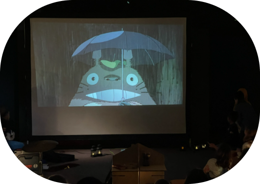
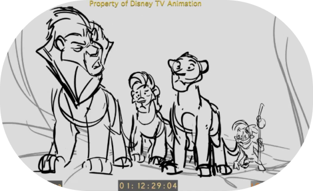

¿Te gustan las películas de disney? ¿Eres más de animación 2D oriental? ¿O
quizás buscas algo nuevo y desconocido? Pues en esta sección,
se proyectarán trabajos de varios estudios de animación famosos (Pixar,
Dreamworks, Ghibli... etc) y también de equipos pequeños y/o independientes.
También podrás disfrutar de charlas, demostraciones y talleres con
trabajadores de la insdustria de la animación, aprendiendo de todos los
estilos posibles.
Esta sección tendrá también pequeños stands de merchandising a la
disposición del público, puedes encontrarte desde pequeños dibujos hasta
grandes figuras o incluso obras de artesanía.
Animación

